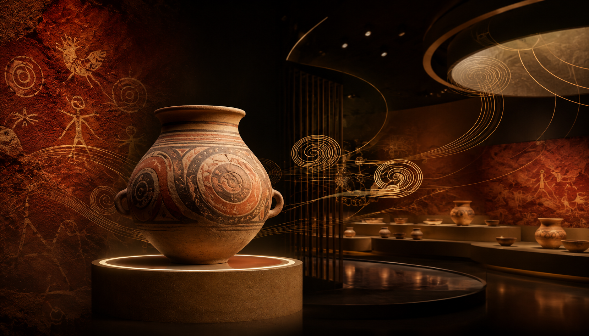

仰韶村遗址被发现
仰韶文化由此进入现代考古视野，渑池也拥有了极具识别度的文化名片。
 渑池数字志
渑池数字志

Yangshao Culture
渑池是仰韶文化发现地。沿着遗址、彩陶和博物馆向前看，一只陶罐里的纹样能把七千年的文明线索带到眼前。
Core Story
仰韶村遗址的发现，使“仰韶文化”成为中国新石器时代文化研究中的重要名称。陶土红、黄河金和深墨黑在这里交织，像展柜灯光落在彩陶表面的纹路。
从发现遗址，到辨认器物，再走进博物馆，仰韶文化不再只是书本里的名词，而是可以被观看、被靠近的家乡记忆。
Timeline
仰韶文化由此进入现代考古视野，渑池也拥有了极具识别度的文化名片。
鱼纹、旋纹、几何纹样给网页提供了天然的设计语言：圆环、线条、节奏和陶土色。
博物馆让遗址知识变成可观看、可学习、可传播的公共文化空间。
新的媒介让古老遗址有了新的讲述方式，彩陶纹样也能在屏幕上重新被看见。
鱼纹、旋纹和几何线条把视线引向展柜，也把渑池的文化气质串联起来。
灯光、暗场和大图像让遗址知识像一次缓慢靠近的展览。

短句和大标题保留了讲述的节奏，让考古线索读起来更清楚。